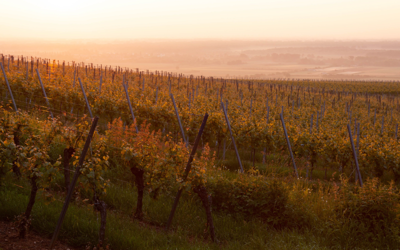

Commençons par une évidence qu'on oublie parfois : Colmar n'est pas qu'une jolie ville à visiter entre deux réunions. C'est une base logistique complète, dense, bien desservie, avec un centre-ville qui se parcourt à pied et une Route des Vins qui commence littéralement en sortant de la ville. Pour un team building, cette compacité change tout : moins de temps perdu en transport, plus de temps pour l'activité elle-même.
Et contrairement à une idée reçue, organiser un team building à Colmar ne se résume pas à une balade en Petite Venise suivie d'une dégustation de vin. La ville et ses environs immédiats proposent des formats bien plus variés que ça.
Colmar, une ville à comprendre avant de choisir son activité
Un peu de contexte pour commencer.
Fondée au XIIIe siècle, Colmar a traversé la guerre de Trente Ans, l'annexion prussienne et les deux guerres mondiales sans perdre son centre historique, un cas assez rare en France pour une ville de cette taille. Le résultat : des rues entières de maisons à colombages qui ne sont pas une reconstitution, mais bien le tissu urbain d'origine, toujours habité et vivant.
Le centre historique de Colmar est si bien conservé qu'il a failli servir de décor à un grand studio hollywoodien pour un film médiéval. Entre la Petite Venise, ses canaux et ses cigognes sur les toits, et les 51 grands crus accessibles à 10 minutes en voiture, peu de villes alsaciennes cumulent un tel patrimoine à une telle échelle piétonne.
Pourquoi c'est pertinent pour le team building ? Parce que cette proximité immédiate entre ville historique et vignoble crée des combinaisons impossibles ailleurs en Alsace : une matinée en centre-ville, un déjeuner dans une winstub, une après-midi dans les vignes, le tout sans prendre l'autoroute.
Les activités qui marchent bien à Colmar
Le rallye gourmand dans le centre historique
Entre maisons à colombages et ruelles pittoresques, un rallye mêlant énigmes, dégustations et défis fait découvrir le centre historique autrement qu'en visite guidée classique. Les équipes avancent d'étape en étape, à leur rythme, en résolvant des indices liés au patrimoine local.
🥨 Rallye gourmand dans le centre historique
Découverte du vieux Colmar en équipe, énigmes, dégustations et spécialités locales au programme. Format demi-journée, accessible dès 6 personnes jusqu'à 60. Dès 35€/pers.
Gastronomie & Vins · Culture & Patrimoine · CohésionL'atelier chocolat, encadré par un artisan
Dans un registre plus calme et plus gourmand, l'atelier chocolat en équipe met les participants aux fourneaux sous la direction d'un chocolatier. Précision, organisation et collaboration sont nécessaires pour réussir les recettes, avant une dégustation collective qui fait toujours l'unanimité.
🍫 Atelier chocolat en équipe
Créations chocolatées réalisées en équipe, encadrées par un artisan. Format 2h, accessible dès 6 personnes. Dès 40€/pers.
Gastronomie & Vins · Créatif · CommunicationLe rallye en voitures vintage vers les vignobles
Pour un format plus premium, certains prestataires colmariens proposent de partir en équipage à bord de véhicules vintage à la découverte des paysages viticoles environnants. Entre énigmes, défis et étapes gourmandes chez des vignerons, c'est un format qui marque durablement, particulièrement adapté aux séminaires où l'on veut marquer le coup.

L'escape game et la simulation de pilotage, pour les équipes qui veulent de l'adrénaline
Colmar n'est pas que gastronomie et patrimoine. Les amateurs de formats plus rythmés trouveront leur compte avec un escape game immersif en centre-ville, ou une session de simulation de pilotage automobile sur circuits virtuels, un format indoor efficace pour les équipes qui veulent de la compétition sans les contraintes météo.
Un format solidaire à découvrir : l'atelier savon avec SapoCycle
Autre option, plus rare et particulièrement porteuse de sens : un atelier de fabrication de savons solidaires, animé par des formateurs en situation de handicap au sein d'un ESAT colmarien. Au-delà de la cohésion d'équipe classique, ce format ajoute une vraie dimension de sensibilisation, un choix qui parle de plus en plus aux entreprises soucieuses de leur impact RSE.
Pour aller plus loin : si l'angle solidaire vous intéresse, on a rassemblé d'autres formats dans le même esprit sur notre page dédiée Engagé & Solidaire.
Colmar pour un séminaire + team building
Colmar bénéficie d'une desserte solide pour une ville de sa taille : des liaisons TGV directes quotidiennes avec Paris, environ 2h20 de trajet, et l'EuroAirport Bâle-Mulhouse à moins de 45 km. Strasbourg et Mulhouse sont toutes deux à moins d'une heure. De quoi organiser un séminaire d'une journée sans complications logistiques, même pour des équipes venues de loin.
Le massif des Vosges est également à 20 minutes de route, une option pour les équipes qui veulent combiner activité urbaine et grand air sans y passer la journée en transport.
L'idée de journée complète : Matinée rallye gourmand ou escape game en centre-ville. Déjeuner dans une winstub du vieux Colmar. Après-midi dégustation ou rallye dans les vignobles d'Eguisheim ou Turckheim. Fin de journée en balade en Petite Venise, ou marché de Noël si la saison s'y prête. Budget indicatif : 100 à 160€ par personne tout compris pour une équipe de 15 à 30 personnes.
Ce que Colmar offre que les autres villes n'ont pas
Trois choses, concrètement.
Un centre historique intact, à taille humaine. Peu de team buildings peuvent se dérouler intégralement à pied dans un décor aussi préservé. La Petite Venise et ses canaux offrent un cadre photogénique qui marque les esprits, un vrai atout pour la dimension "souvenir partagé" du team building.
La Route des Vins à 10 minutes. 51 grands crus accessibles en quelques minutes de voiture, aucune autre ville alsacienne ne peut proposer cette densité viticole aussi proche du centre-ville. Les formats oenotouristiques, dégustations, rallyes, ateliers d'assemblage, sont ici un vrai avantage compétitif.
Une échelle qui simplifie tout. Contrairement à une métropole, Colmar se parcourt sans contrainte de circulation ou de stationnement. Pour une journée qui enchaîne plusieurs activités, ça change concrètement le programme possible.
La saison idéale pour un team building à Colmar
Printemps (avril à juin) : les vignes reverdissent, les activités en extérieur sont dans leurs meilleures conditions, et la ville est moins fréquentée qu'en plein été.
Vendanges (septembre à octobre) : la période la plus caractéristique de la région. Certains domaines proposent de vivre les vendanges en équipe, une expérience rare à combiner avec une activité de cohésion classique.
Décembre : le marché de Noël de Colmar attire des visiteurs de toute l'Europe. Une journée team building suivie d'une soirée au marché fonctionne très bien pour une clôture d'année, mais anticipez largement les réservations, c'est la période la plus demandée.
Toutes les activités disponibles à Colmar
Filtrez par univers, format et budget, et trouvez ce qui correspond à votre équipe.